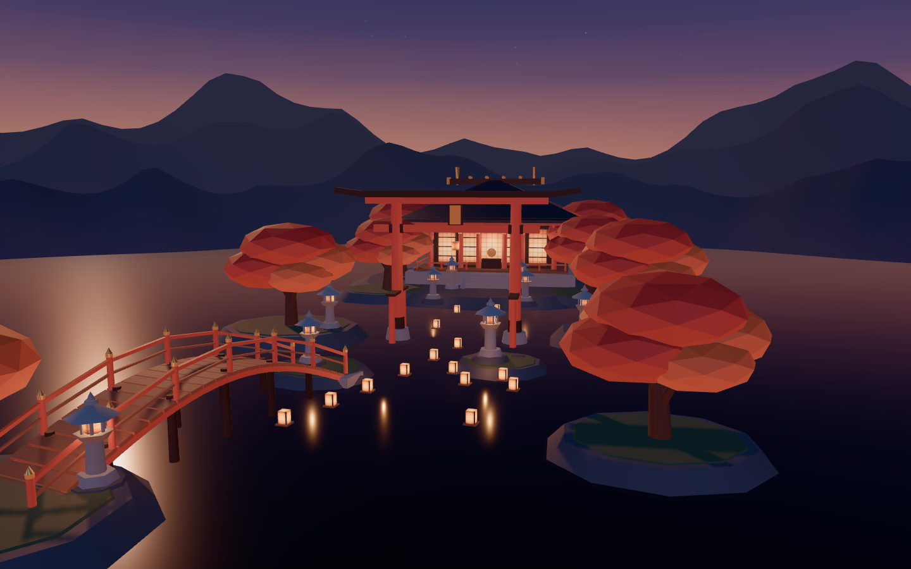
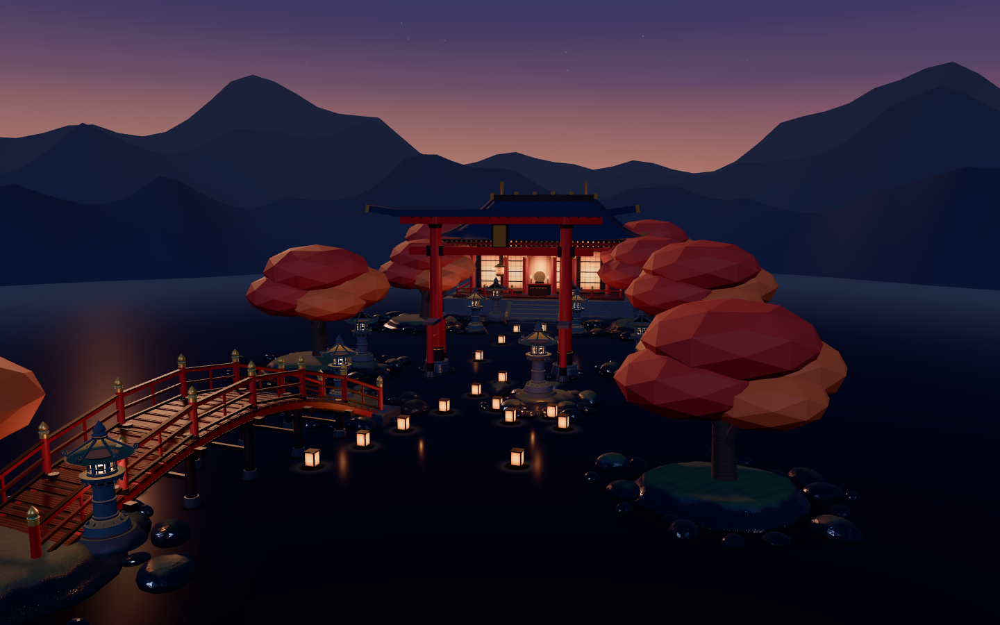
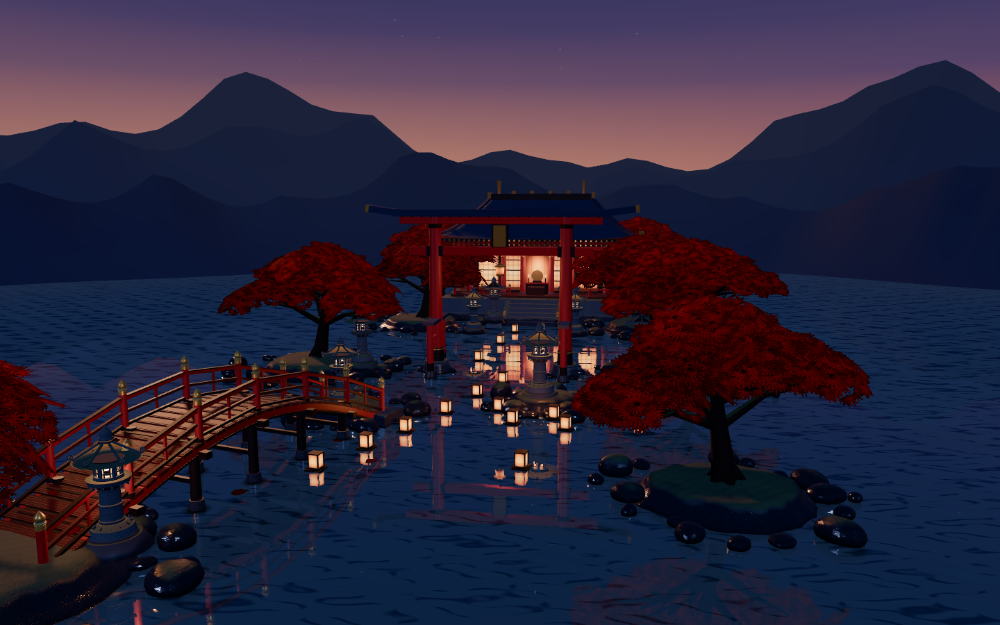

How the scene was graded and upgraded
An independent critic agent inspected chromeless 1440×900 screenshots across five viewpoints without reading the source code. It scored each pass out of 100 across five visual categories: tone mapping, lighting and contact shadows, surface relief, water and foliage, and atmospheric depth.
Each upgrade pass was only accepted after automated verification confirmed zero console or shader errors, 60 frames per second pacing, working keyboard and mouse navigation, and higher realism scores on every viewpoint.
| Evaluation axis or viewpoint | Pass 0 | Pass 1 | Pass 2 | Pass 3 | Pass 4 |
|---|---|---|---|---|---|
| 1. Tone mapping and exposure (out of 20) | 6 | 13 | 14 | 15 | 18 |
| 2. Lighting and contact shadows (out of 20) | 5 | 11 | 14 | 15 | 17 |
| 3. Surface relief and roughness (out of 20) | 3 | 4 | 15 | 16 | 17 |
| 4. Water and foliage (out of 20) | 3 | 4 | 5 | 16 | 18 |
| 5. Atmospheric depth (out of 20) | 4 | 11 | 12 | 13 | 18 |
| Overall realism score (out of 100) | 21 | 43 | 60 | 75 | 88 |
| Overview viewpoint | 21 | 44 | 58 | 74 | 87 |
| Arched bridge viewpoint | 22 | 43 | 61 | 76 | 88 |
| Lantern close-up viewpoint | 20 | 41 | 60 | 75 | 88 |
| Water grazing viewpoint | 21 | 42 | 58 | 76 | 88 |
| Sanctuary interior viewpoint | 21 | 45 | 63 | 75 | 89 |
Progression from Pass 0 to Pass 4
Captured 1440×900 diagnostic frames for the currently selected camera preset across all five stages.
Standard materials, linear tone mapping, geometric foliage, and basic lighting.

AgX tone mapping, washi paper candle gradients, kumiko shoji grids, and multi-ridge mountains.

Carved granite lanterns, wet shoreline stones, moss relief, timber grain, and kawara roof tiles.

Planar mirror water reflections with 5-octave ripples and 7-lobed Japanese maple boughs.
Selective optical bloom, pooled exponential water mist, backlit leaf translucency, and rising embers.